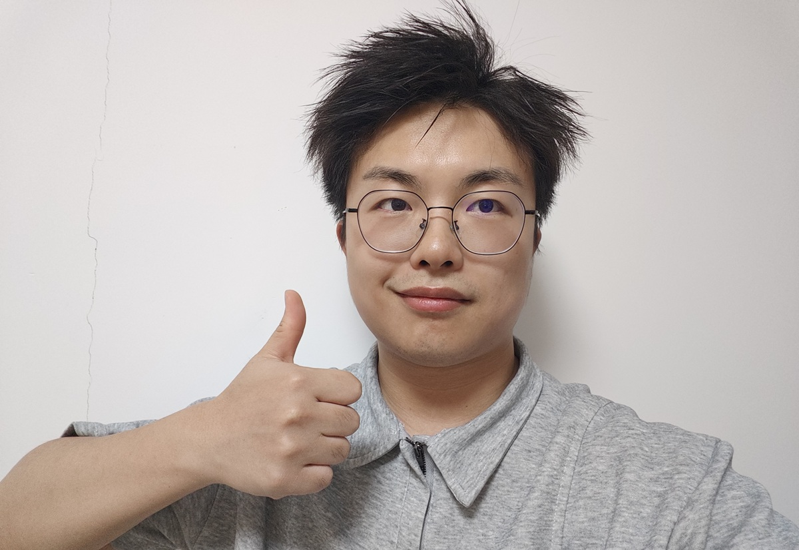

楼宇自动化工程工具开发
2021.12 - 2023.04;2025.06 - 至今
参与日本楼宇自动化（BA）大型工程工具开发与维护。项目基于.NET WinForms开发，通过BACnet协议与楼宇控制器通信，实现设备配置、数据监控、调试诊断、工程部署与参数维护等功能。
- WinForms客户端功能开发
- 基于既有框架进行功能追加与维护
- Bug修复与问题定位
- BACnet协议相关功能联调
- 楼宇控制器通信调试
- 遗留代码维护与分析
.NET客户端开发工程师
✉ xiao_ranbei@outlook.com ☎ 17703708201 ⚒ 无锡
年龄：27岁 学历：大专 日语等级：N2

5年.NET客户端开发经验，具备日本大型楼宇自动化（BA）项目开发与维护经验。 曾参与Fujitsu通信行业相关项目，以及NTT DATA与Azbil楼宇自动化工程工具开发与维护，长期从事基于WinForms的工业软件开发。 熟悉BACnet协议、楼宇控制器通信、设备配置管理、数据监控与调试诊断等业务场景。 具备大型遗留系统维护经验，参与VB6/VB.NET/C#.NET混合项目开发，并参与.NET Framework向.NET 8升级改造。 同时具备Flutter跨平台开发经验，参与日本企业IoT空间管理平台开发，涉及BLE通信、云端API、GetX MVVM-C架构等。 具备良好的问题定位能力、旧系统维护能力以及日本项目协作经验。
参与日本楼宇自动化（BA）大型工程工具开发与维护。项目基于.NET WinForms开发，通过BACnet协议与楼宇控制器通信，实现设备配置、数据监控、调试诊断、工程部署与参数维护等功能。
面向FX系列楼宇控制器的一站式工程配置、调试、维护与管理平台。项目基于VB6/VB.NET/C#.NET等技术构建，运行于工控平台，属于长期维护型大型工业软件项目。
面向日本企业办公场景的Flutter IoT控制与空间管理平台。通过BLE近场通信与云端API双通道，实现楼宇设备实时控制与空间状态监控，支持iOS/Android双平台。
Fujitsu（国内）
NTT DATA（国内）
参与日本楼宇自动化（BA）大型工程工具开发与维护。项目基于.NET WinForms开发，通过BACnet协议与楼宇控制器通信，实现设备配置、数据监控、调试诊断、工程部署与参数维护等功能。
Azbil（日本驻场）
面向FX系列楼宇控制器的一站式工程配置、调试、维护与管理平台。项目基于VB6/VB.NET/C#.NET等技术构建，运行于工控平台，属于长期维护型大型工业软件项目。
NTT DATA（国内）
面向日本企业办公场景的Flutter IoT控制与空间管理平台开发。通过BLE近场通信与云端API双通道，实现楼宇设备实时控制与空间状态监控，支持iOS/Android双平台。
NTT DATA（国内）
持续参与楼宇自动化WinForms项目开发与维护，并参与.NET Framework向.NET 8升级改造。
商丘学院
学历：专科。主修课程：数据结构、计算机网络、C#程序设计、数据库原理与应用、软件工程等。在校期间积极参与各类编程实践活动，培养了扎实的编程基础和解决问题的能力。
JLPT N2
获得日语能力考试N2证书，具备良好的日语听说读写能力，能够胜任日本项目的沟通与协作工作。